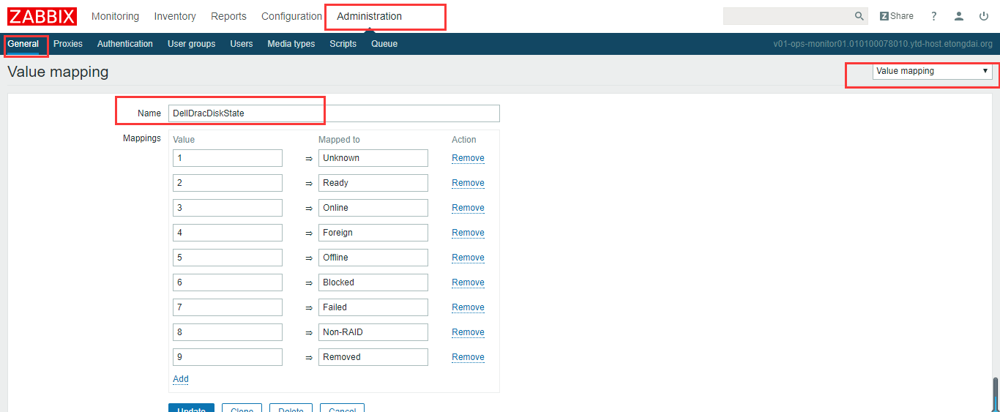
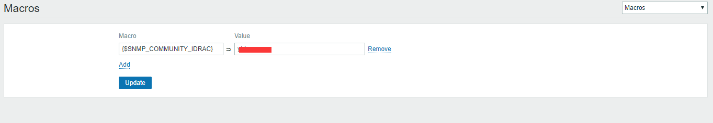
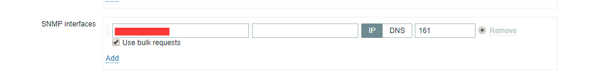
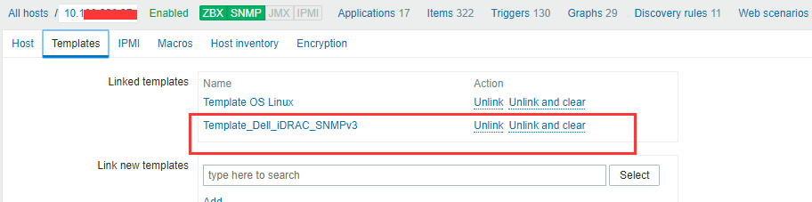
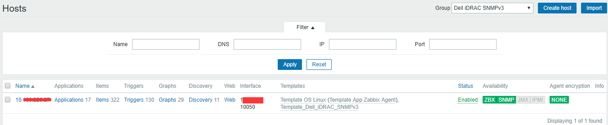
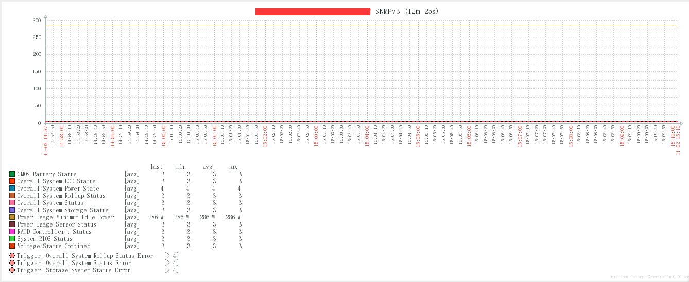
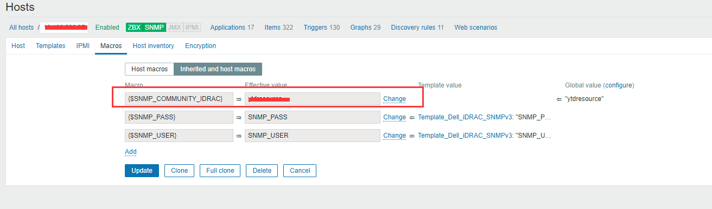
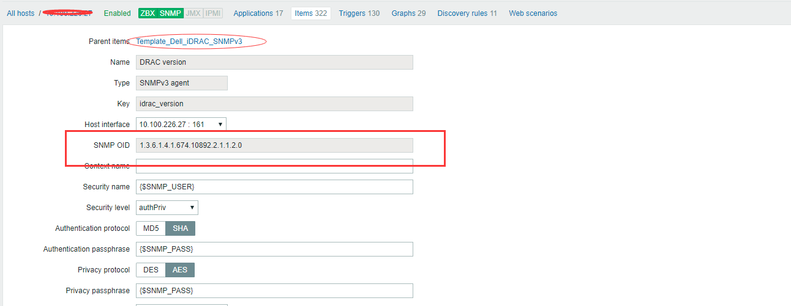

Zabbix 3.2.6通过SNMP和iDRAC监控DELL服务器
一、总览
SNMP(简单网络管理协议)，由一组网络管理的标准组成，包含一个应用层协议（application layer protocol）、数据库模型（database schema）和一组资源对象。该协议能够支持网络管理系统，用以监测连接到网络上的设备是否有任何引起管理上关注的情况.
SNMP是监控服务器以外设备的非常好的方式，比如可以用于监控打印机、交换机、路由器等，只要是有SNMP功能，Zabbix都可以监控。
SNMP检查是通过UDP协议，从Zabbix 2.2.3开始，一次SNMP请求可以查询设备的多个值，覆盖到SNMP的所有项目值，这样是SNMP进程变得更加高效，从Zabbix 2.4开始，在创建SNMP接口的地方有一个”Use bulk requests”的选项，可以禁用对它不适用的设备。
iDRAC又称为Integrated Dell Remote Access Controller，也就是集成戴尔远程控制卡，iDRAC卡相当于是附加在服务器上的一台小电脑，通过与服务器主板上的管理芯片BMC进行通信，监控与管理服务器的硬件状态信息。它拥有自己的系统和IP地址，与服务器上的OS无关。是管理员进行远程访问和管理的利器。
二、配置DELL管理卡,iDRAC开启SNMP服务.
登录之后单击 —> iDRAC设置 —> 网络 —> 服务 —> SNMP代理，以下几个参数zabbix会用到
1 2 3 4 | 已启用 √ SNMP团体名称 snmpceshi SNMP协议 所有（SNMP v1/2/3） SNMP查找端口号 161 |
三、配置Zabbix server端
1、编译zabbix server支持
要想支持通过SNMP监控服务器信息，需要在编译的时候加上参数–with-net-snmp,解决依赖需要安装如下软件包
1 | yum -y install net-snmp-devel |
2、zabbix 服务端通过snmp验证
我们使用的工具是snmpget，需要安装如下软件包支持。
1 | yum -y install net-snmp-utils |
使用如下指令简单验证一下，我们使用SNMPv2版本。
1 2 3 4 5 | snmpget -v 2c -c <Community> <iDRAC IP> .1.3.6.1.4.1.674.10892.2.1.1.2.0#snmpget -v 2c -c snmpceshi 10.20.0.9 .1.3.6.1.4.1.674.10892.2.1.1.2.0SNMPv2-SMI::enterprises.674.10892.2.1.1.2.0 = STRING: "iDRAC8"#SNMP协议IP后面的为每个值得iod号.zabbix针对SNMP已经内部定义了相关MACRO，直接使用即可。 |
四、配置Zabbix WEB端
需要创建以下值映射，zabbix 3.2.6的版本我在没创建value map之前，是导不进去模板文件的，创建后可以正常导入模板文件了.
1 | Menu: Administration->General->Value mapping->Create value map |
DellDracDiskState
1 2 3 4 5 6 7 8 9 | 1 -> Unknown2 -> Ready3 -> Online4 -> Foreign5 -> Offline6 -> Blocked7 -> Failed8 -> Non-RAID9 -> Removed |
样式如下添加即可：

Dell iDRAC Network Device Connection Status
1 2 | 1 -> Connected2 -> Disconnected |
Dell Open Manage System Status
1 2 3 4 5 6 | 1 -> Other2 -> Unknown3 -> OK4 -> NonCritical5 -> Critical6 -> NonRecoverable |
DellPowerState
1 2 3 4 | 1 -> Other2 -> Unknown3 -> Off4 -> On |
Dell PSU State Settings
1 2 3 4 5 6 7 | 1 -> Unknown2 -> Online (state disabled)4 -> not Ready8 -> Fan Failure10 -> Online and Fan Failure16 -> On242 -> Online and OK |
DellRaidLevel
1 2 3 4 5 6 7 8 9 10 | 1 -> Unknown2 -> RAID-03 -> RAID-14 -> RAID-55 -> RAID-66 -> RAID-107 -> RAID-508 -> RAID-609 -> Concatenated RAID 110 -> Concatenated RAID 5 |
DellRaidVolumeState
1 2 3 4 | 1 -> Unknown2 -> Online3 -> Failed4 -> Degraded |
Dell_PSU_SensorState
1 2 3 4 5 6 | 1 -> Presence Detected2 -> PS Failure4 -> Predictuve Failure8 -> PS AC lost16 -> AC lost or out of range32 -> AC out of range but still present |
2、配置全局变量{$SNMP_COMMUNITY_IDRAC}
1 | Menu：Administration->General->Macros |
Value处填写iDRAC的WEB上配置的SNMP团体名（Community）
3、导入模板
模板地址见右下角链接文档，“Template Dell iDrac SNMPV2 zbx2.2.xml”支持zabbix2.2版本，“Template Dell iDrac SNMPV2 zbx3.xml”支持zabbix3版本。
1 | Menu：Configuration->Templates->Import，导入“Template_Dell_iDRAC_SNMPv3.zbx”模板。 |
4、创建主机
1 | Menu：Configuration->Hosts->Create host |


四、验证
经过一段时间，我们可以看到SNMP正常监控了，自带模板没有Graphs，可以自己创建需要监控的项目查看。

监控项:
1 2 3 4 5 6 7 8 | CMOS Battery Status CMOS电池状态Overall System Power State 整个系统电源状态Overall System Rollup Status 总体系统汇总状态Overall System Status 整体系统状态Overall System Storage Status 整个系统的存储状态RAID Controller : Status RAID控制器:状态System BIOS Status 系统的BLOS状态Voltage Status Combined 电压状态相结合 |
遇到的问题：
在配置好$SNMP_COMMUNITY_IDRAC}= snmpceshi 后数据始终无法获取到，有的说是要等一段时间，最后我在后面配置好Dell iDrac的用户名密码后居然收集到数据了，不知道是什么原因，正常查找中...

可以通过host主机中item项中的SNMP OID值来测试主机到idrac的连通性：

1 2 3 4 5 6 7 8 9 10 11 12 13 14 15 16 17 18 19 | snmpwalk命令测试方法：[root@localhost ~]# snmpwalk -v 2c -c snmpceshi 10.20.0.9 1.3.6.1.4.1.674.10892.5.5.1.20.130.1.1.8.1SNMPv2-SMI::enterprises.674.10892.5.5.1.20.130.1.1.8.1 = STRING: "25.3.0.0016"[root@localhost ~]# [root@localhost ~]# snmpget -v 2c -c snmpceshi 10.20.0.9 1.3.6.1.4.1.674.10892.5.4.600.60.1.15.1.1SNMPv2-SMI::enterprises.674.10892.5.4.600.60.1.15.1.1 = INTEGER: 286[root@localhost ~]# [root@localhost ~]# snmpget -v 2c -c snmpceshi 10.20.0.9 1.3.6.1.4.1.674.10892.5.4.600.60.1.15.1.1SNMPv2-SMI::enterprises.674.10892.5.4.600.60.1.15.1.1 = INTEGER: 286snmpget命令测试方法:[root@localhost ~]$ snmpget -v 2c -c snmpceshi 10.20.0.9 1.3.6.1.4.1.674.10892.2.1.1.5.0SNMPv2-SMI::enterprises.674.10892.2.1.1.5.0 = STRING: "2.30.30.30"[root@localhost ~]$ [root@localhost ~]$ snmpget -v 2c -c snmpceshi 10.20.0.9 1.3.6.1.4.1.674.10892.2.1.1.2.0SNMPv2-SMI::enterprises.674.10892.2.1.1.2.0 = STRING: "iDRAC8"[root@localhost ~]$ snmpget -v 2c -c snmpceshi 10.20.0.9 1.3.6.1.4.1.674.10892.2.1.1.7.0SNMPv2-SMI::enterprises.674.10892.2.1.1.7.0 = STRING: "https://10.20.0.9:443" |
参考文档：
http://www.cnblogs.com/itfat/p/7453875.html
https://www.centos.bz/2017/08/zabbix-3-2-6-snmp-idrac-monitor-dell-server/
http://www.mamicode.com/info-detail-1071592.html
模板下载地址：https://github.com/endersonmaia/zabbix-templates/tree/master/dell/idrac